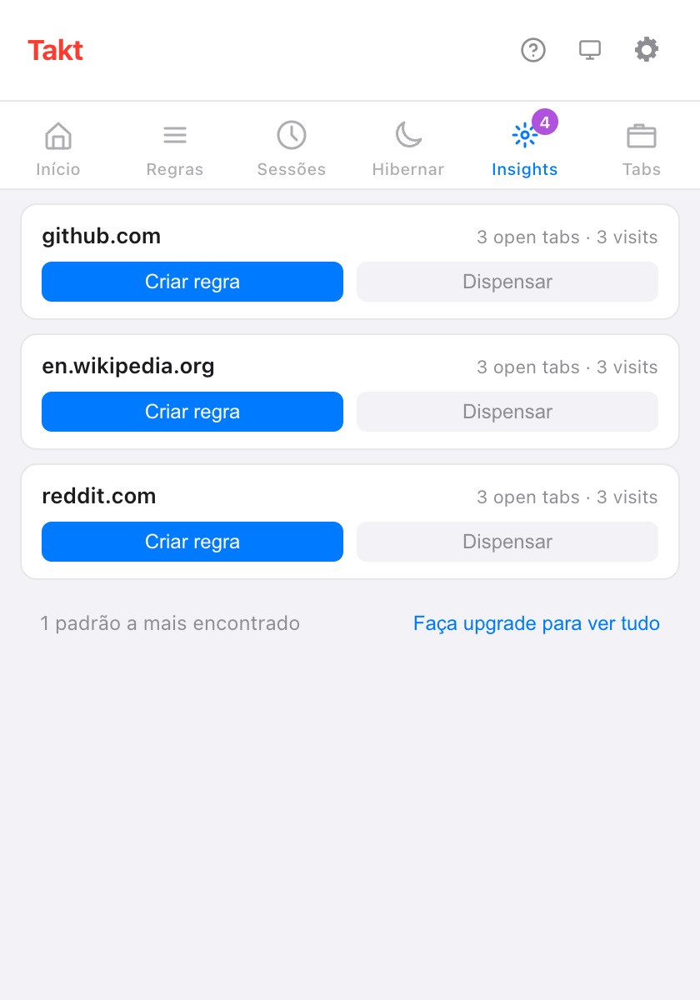

Resposta curta: abra o painel Insights do popup do Takt. Cada cartão é um site que você usa muito e que ainda não tem regra. Clique em Criar regra, confira com Pré-visualizar abas correspondentes e salve.
- As sugestões vêm das suas abas abertas e das suas visitas recentes, contadas no seu dispositivo.
- Sugerir regras pede à IA no dispositivo do Chrome que agrupe seus sites abertos em regras.
- O Testador de regras e o número de correspondências mostram se a regra faz o que você queria.
De onde vêm as sugestões de regras?
O Takt fica de olho em sites que claramente merecem um grupo. São três fontes:
| Fonte | Sugere um site quando | Onde aparece | Plano |
|---|---|---|---|
| Abas abertas | 3 ou mais abas dele estão abertas ou hibernadas | Popup → Insights, Opções → Rules | Free: 3 cartões por vez |
| Visitas recentes | Você o abriu 5+ vezes, ou em visitas espalhadas por 2+ dias, nos últimos 7 dias | Popup → Insights, Opções → Rules | Free: 3 cartões por vez |
| Sugestões de IA | Você clica em Sugerir regras | Opções → Rules | Free, até o limite de 5 regras |
Um site já coberto por uma regra existente de domínio ou contém nunca é sugerido. Nem nada que você tenha dispensado.
Como funciona o painel Insights?
Cada cartão mostra um site e o motivo de ele estar ali, por exemplo "3 open tabs · 3 visits". Dois botões:
- Criar regra abre o editor de regras com o site já preenchido. Nada é salvo até você salvar.
- Dispensar esconde o cartão. As sugestões dispensadas continuam listadas na página Rules das opções, onde você pode restaurá-las.
No plano gratuito você vê os 3 primeiros cartões e uma linha como "1 padrão a mais encontrado". O Premium (US$ 3/mês ou US$ 30/ano) mostra todos.

O que o Takt registra para fazer sugestões?
Só nomes de sites e contagens. No modo Por regras, quando uma nova aba não corresponde a nenhuma regra, o Takt soma uma visita à contagem daquele site. Ele guarda:
- o domínio, uma contagem de visitas e a primeira e a última vez em que o viu;
- apenas registros dos últimos 7 dias, e no máximo 1.000 sites;
- nada das janelas anônimas.
Tudo fica no armazenamento local de extensões do Chrome e nunca sai do seu navegador. Clear tab pattern history, em Settings, apaga esses dados. Se você conceder a permissão opcional de histórico de navegação, os números de visitas em cada cartão passam a vir do próprio histórico do Chrome dos últimos 90 dias.
O que são as sugestões de regras por IA?
Na página Rules das opções, Sugerir regras envia a lista de sites das suas abas abertas para a Prompt API integrada ao Chrome. O modelo roda no seu dispositivo, agrupa os sites por tema e dá nome a cada grupo. Só entram nomes de sites: nada de títulos, nada de conteúdo das páginas.
- Cada sugestão tem Adicionar regra e Dispensar. Adicionar regra salva na hora, já ativada.
- A primeira execução pode levar um minuto enquanto o Chrome prepara o modelo.
- Num dispositivo que não roda o modelo, você vê "As sugestões de IA não estão disponíveis neste dispositivo."
- No plano gratuito, você recebe tantas sugestões quantas vagas de regra gratuitas ainda tiver, de um total de 5.
Como testar uma regra antes de confiar nela?
Duas ferramentas na página Rules das opções:
- Testador de regras. Cole uma URL e, se quiser, um título de página. O Takt responde "Matches: regra → grupo" ou "Nenhuma regra correspondente". Marque Incluir regras desativadas para testar regras que você desligou.
- Pré-visualizar abas correspondentes. Dentro do editor de regras, lista as abas abertas que suas condições ainda não salvas pegariam, em todas as janelas. Se nenhuma corresponder, aparece "Nenhuma aba corresponde a esta regra."

Como sei que uma regra está funcionando?
Cada regra na lista mostra quantas abas ela já colocou no seu grupo. Uma aba conta quando a regra a tira de "sem grupo".
A visão Stats mostra os totais: abas organizadas, abas por dia, sua regra principal e suas 10 regras mais usadas. Uma regra que fica em zero por uma semana merece uma segunda olhada com o Testador de regras. Redefinir estatísticas zera as contagens.
Posso criar uma regra a partir da página em que estou? Premium
Sim. Clique com o botão direito na página e escolha Criar regra a partir desta aba. O Takt abre o editor de regras com um padrão glob como *://github.com/* já preenchido. Revise e salve.
O que as sugestões não fazem
- Elas funcionam site por site. O Takt não vai sugerir "todos os pull requests" de vários repositórios. Para isso, escreva uma regra glob ou regex (Premium).
- As sugestões por abas abertas precisam de 3 abas do mesmo site. Duas abas não geram cartão.
- As sugestões de IA dependem do modelo no dispositivo do Chrome. Computadores mais antigos ou menos potentes podem não recebê-las.
- As sugestões alimentam o modo Por regras. Se você prefere não escrever regras, experimente o agrupamento por categoria ou por IA.
Abra suas abas como sempre. Deixe o Takt dizer qual regra escrever.
Adicionar o Takt ao Chrome, grátisPerguntas frequentes
Como o Takt decide quais regras sugerir?
Um site se qualifica com 3 ou mais abas abertas, ou com 5 visitas (ou visitas em 2 dias diferentes) nos últimos 7 dias, desde que nenhuma regra o cubra.
As sugestões de regras são gratuitas?
Sim. No plano gratuito você vê 3 cartões de Insights por vez e sugestões de IA até o limite de 5 regras. O Premium (US$ 3/mês ou US$ 30/ano) mostra todas.
As sugestões de regras por IA enviam minhas abas para algum lugar?
Não. Só os nomes dos sites das suas abas abertas vão para o modelo no dispositivo do Chrome. Veja como o Takt mantém os dados no seu computador.
Posso recuperar uma sugestão que dispensei?
Sim. A página Rules das opções lista as sugestões descartadas, e você pode restaurá-las ali.